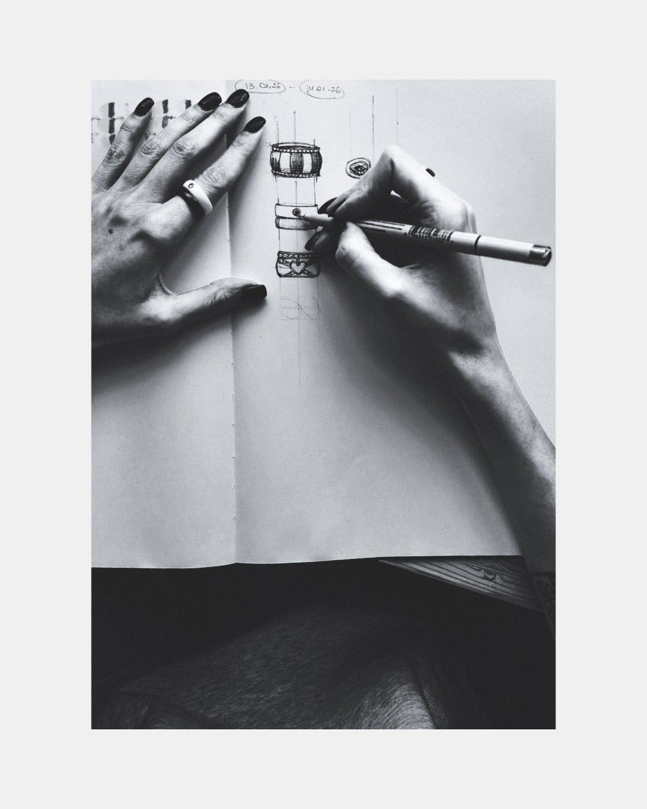

- Born:
- April 26, 1917 — Guangzhou, China
- Died:
- May 16, 2019 — New York City, US (age 102)
Pei trained at MIT and Harvard and spent his first decade building for a real estate developer, learning cost, schedule and the city block before he opened his own office.
His buildings are made of clear geometric solids, often triangles and prisms, in precise concrete, stone and glass. Circulation happens in large top-lit halls that work as public rooms.
He took on commissions in the United States, France, China, Hong Kong and Qatar, and returned to the same few materials again and again.